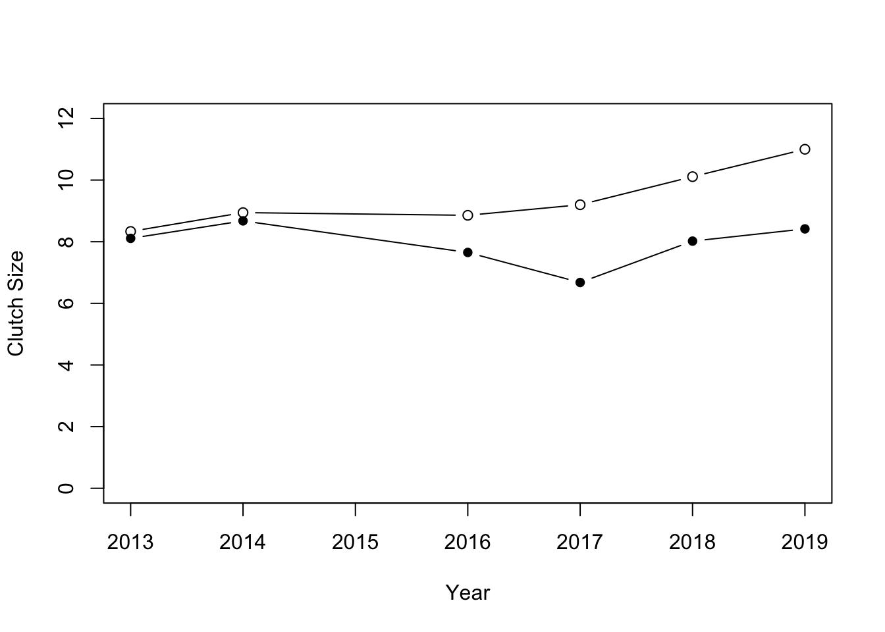

Chapter 4 Combining data sets
[INSERT PREAMBLE ABOUT DATA MANAGEMENT]
In this exercise you will learn how to combine two data sets to create a new one of combined data to answer a conservation-related question: “Does threat status vary with species’ generation times?”
This question is crucial to conservation biologists because it helps us to generalise our ideas about what drives extinction risks. In other words, if we can say “species with slow life histories tend to be more threatened” then this gives useful information that can help with planning. For example, imagine we have some species that have not yet been assessed (we don’t know if they are threatened or not). Should we focus attention on the one with a short generation time, or long generation time?
To answer this question we will need to import two large data sets, tidy them up a bit and then combine them for analysis.
Let’s start with the “Amniote Life History Database,”3 which is a good source of life history data. We have encountered this database before. Recall that the missing values (which are normally coded as NA in R) are coded as “-999”. The easiest way to take care of this is to specify this when we import the data using the na.strings argument of the read.csv function. Thus we can import the data like this:
amniote <- read.csv("CourseData/Amniote_Database_Aug_2015.csv",na.strings = "-999")We first need to load the tidyverse packages.
library(tidyverse)We can filter on the taxonomic class to subset to only mammals. Then, to address our question, we want data on generation time for mammals. Generation time is often measured as the average age at which females reproduce so we can get close to that with female_maturity_d. We will first select these columns, along with genus and species. We can combine these two taxonomic variables using mutate and paste to get our latin binomial species name.
We have previously learned that log transforming such variables is a good thing to do, so we can use mutate again to do this transformation.
Finally, we can use na.omit to get rid of entries with missing values (which we cannot use). This is not essential, but keeps things more manageable.
mammal <- amniote %>%
filter(class == "Mammalia") %>% #get the mammals only
select(genus, species, female_maturity_d) %>% #get useful columns
mutate(species = paste(genus, species)) %>%
select(-genus) %>%
mutate(logMaturity = log(female_maturity_d)) %>%
na.omit()Let’s take a quick look at what we have:
head(mammal)## species female_maturity_d logMaturity
## 20 Echinops telfairi 278.42000 5.629131
## 22 Hemicentetes nigriceps 48.57000 3.883006
## 23 Hemicentetes semispinosus 46.19892 3.832956
## 27 Microgale dobsoni 669.59200 6.506669
## 40 Microgale talazaci 639.00000 6.459904
## 47 Setifer setosus 198.00000 5.288267Looks good. Now let’s import the IUCN Red List data.
redlist <- read.csv("CourseData/MammalRedList.csv")Let’s take a look at that.
names(redlist)## [1] "Species.ID" "Kingdom" "Phylum"
## [4] "Class" "Order" "Family"
## [7] "Genus" "Species" "Authority"
## [10] "Infraspecific.rank" "Infraspecific.name" "Infraspecific.authority"
## [13] "Stock.subpopulation" "Synonyms" "Common.names..Eng."
## [16] "Common.names..Fre." "Common.names..Spa." "Red.List.status"
## [19] "Red.List.criteria" "Red.List.criteria.version" "Year.assessed"
## [22] "Population.trend" "Petitioned"unique(redlist$Red.List.status)## [1] "DD" "LC" "CR" "NT" "EN" "VU" "EX" "EW"There’s a lot of information there but what we really need is simply the latin binomial (for which we need genus and species) and the threat status Red.List.status.
R treats categorical variables (factor variables) as alphabetical, but in this case the red list status has a meaning going from low threat (Least Concern - LC) to Critically Endangered (CR) and even Extinct in the Wild (EX) at the other end of the spectrum. We can define this ordering using mutate with the factor function.
redlist <- redlist %>%
mutate(species = paste(Genus, Species))%>%
select(species, Red.List.status) %>%
mutate(Red.List.status = factor(Red.List.status,
levels = c("LC","NT","VU","EN","CR","EW","EX")))
head(redlist)## species Red.List.status
## 1 Abditomys latidens <NA>
## 2 Abeomelomys sevia LC
## 3 Abrawayaomys ruschii LC
## 4 Abrocoma bennettii LC
## 5 Abrocoma boliviensis CR
## 6 Abrocoma budini <NA>Now we can combine this with the life history data from above using left_join.
x <- left_join(mammal,redlist,by = "species")Let’s take a look at what we have now:
head(x)## species female_maturity_d logMaturity Red.List.status
## 1 Echinops telfairi 278.42000 5.629131 LC
## 2 Hemicentetes nigriceps 48.57000 3.883006 LC
## 3 Hemicentetes semispinosus 46.19892 3.832956 LC
## 4 Microgale dobsoni 669.59200 6.506669 LC
## 5 Microgale talazaci 639.00000 6.459904 LC
## 6 Setifer setosus 198.00000 5.288267 LCsummary(x)## species female_maturity_d logMaturity Red.List.status
## Length:2000 Min. : 23.81 Min. :3.170 LC :1219
## Class :character 1st Qu.: 121.53 1st Qu.:4.800 VU : 176
## Mode :character Median : 344.12 Median :5.841 EN : 168
## Mean : 574.92 Mean :5.745 NT : 114
## 3rd Qu.: 696.38 3rd Qu.:6.546 CR : 66
## Max. :6391.56 Max. :8.763 (Other): 10
## NA's : 247You can see that there are 247 missing values for the Red List status. These are either species that have not yet been assessed, or maybe where there are mismatches in the species names between the two databases. We will ignore this problem today.
Before plotting, I will also use filter remove species that are extinct (status = “EX” and “EW”). To do this I use the %in% argument to allow me to match a vector of variables. Becuase I want to NOT match them I negate the match using !.
I then ensure that those levels are removed from the variable using droplevels.
x <- x %>%
filter(!Red.List.status %in% c("EX","EW")) %>%
droplevels()Let’s now plot the data to answer the question.
plot(x$Red.List.status,x$logMaturity,ylab="Maturity")
What can we see? If you focus on the median values, it looks like there is a weak positive relationship between this life history trait and threat status: animals with slower life histories tend to be more threatened.
4.1 Exercise - Temperature effects on egg laying dates
Data have been collected on great tits (musvit) at SDU for several years. Your task today is to analyse these data to answer the question: is egg laying date associated with spring temperature? The idea here is that warmer springs will lead to delayed egg laying which could have negative consequences to the population if their caterpillar food source doesn’t keep pace with the change.
You are provided with two datasets: one on the birds and another on weather. You will need to process these using tools in the dplyr package, and combine them (using left_join) for analysis.
The first data set, eggDates.csv, is data from the SDU birds project. The data are arranged in columns where each column is a year and each row is a nest. The data in each column is the day of the year that the first egg in the nest was laid.
These data do NOT fullfil the “tidy data” standard where each variable gets a column. In this case,a single variable (first egg date) gets many columns (one for each year), and column headers are data (the years). The data will need to be processed before you can analyse it.
You will need to use gather to fix this issue so that you produce a version of the data with three columns - nestNumber, Year and dayNumber.
The second dataset, AarslevTemperature.csv, is a weather dataset from Aarslev near Odense. This dataset includes daily temperatures records for several years. You will need to summarise this data to obtain a small dataset that has the weather of interest - average temperature in the months of February to April for each year.
To answer the question, you will need to join these datasets together.
Import the data and take a look at it with
headorstr.Use
gatherto reformat the data. This might take a bit of trial and error - don’t give up!
Maybe this will help: The first argument in the gather command indicates what the columns in the main data represent (i.e. here the column represents “Year”). The second argument is the name you would give to the actual data (i.e. “day”, in this case). The final argument then tells the function which columns of the data are not to be rearranged (i.e. “boxNumber” in this case).
You should end up with a dataset with three columns as described above.
Ensure that year is coded as numeric variable using
mutate. [Hint, you can use the commandas.numeric, but first remove the “y” in the name usinggsub].Calculate the mean egg date per year using
summarise(remember togroup_bythe year first). Take a look at the data.Import the weather data and take a look at it with
headorstr.Use
filtersubset to the months of interest (February-April) and thensummarisethe data to calculate the mean temperature in this period (remember togroup_byyear). Look at the data. You should end up with a dataset with two columns -yearandmeanSpringTemp.Join the two datasets together using
left_join. You should now have a dataset with columnsnestNumber,Year,dayNumberandmeanAprilTempplot a graph of
meanAprilTempon the x-axis anddayNumberon the y-axis.
Now you should be able to answer the question we started with: is laying date associated with spring temperatures.